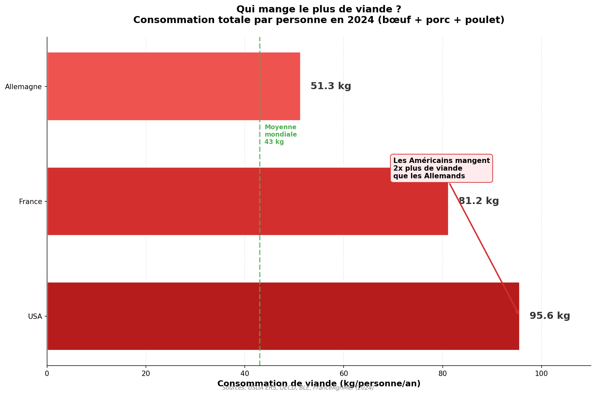
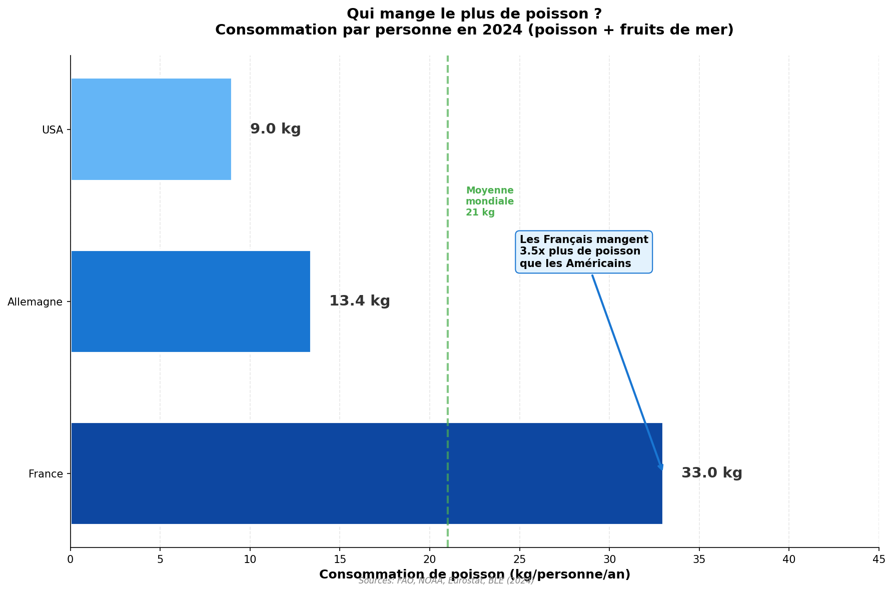
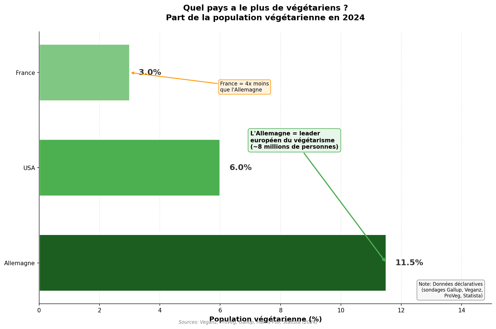
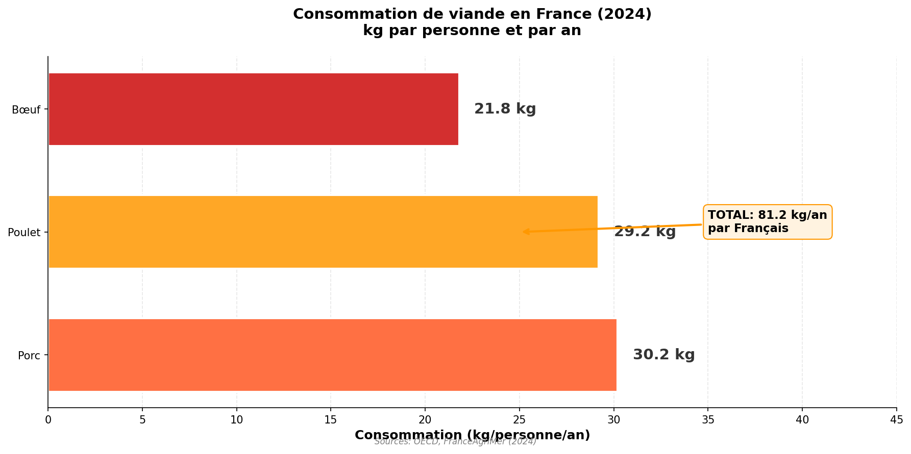
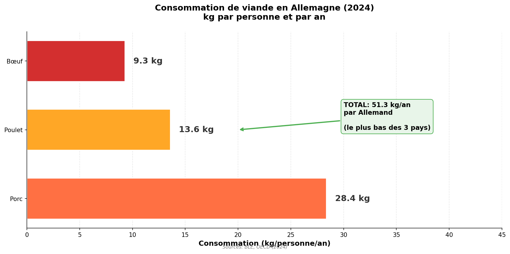
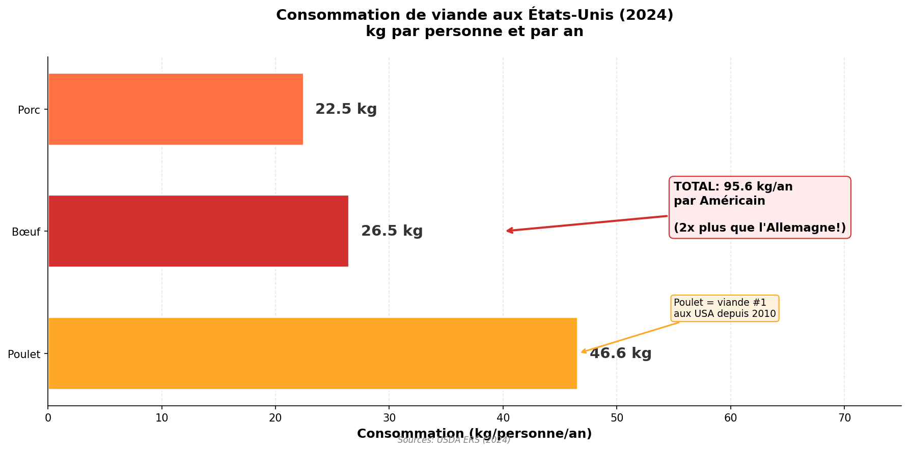

Comparaison France, Allemagne, Etats-Unis
Donnees 2024
La consommation alimentaire varie fortement selon les pays et les cultures. Cette etude compare trois economies majeures : la France, l'Allemagne et les Etats-Unis, en analysant leur consommation de viande, de poisson, et leurs tendances vers le vegetarisme.
Comparaison de la consommation totale de viande (boeuf, porc, poulet) entre les trois pays.

Sources : OECD, USDA ERS, FAO (2024)
La consommation de poisson et fruits de mer reflete les traditions culinaires et l'acces aux ressources marines de chaque pays.

Sources : FAO, Eurostat (2024)
Le vegetarisme progresse differemment selon les pays, influence par les facteurs culturels, economiques et environnementaux.

Sources : ProVeg International, Statista, Gallup (2024)

Repartition de la consommation de viande en France

Repartition de la consommation de viande en Allemagne

Repartition de la consommation de viande aux Etats-Unis
| Indicateur | France | Allemagne | USA |
|---|---|---|---|
| Viande totale (kg/an) | 84.5 | 52.0 | 95.6 |
| Boeuf (kg/an) | 22.5 | 10.0 | 26.5 |
| Porc (kg/an) | 29.5 | 28.0 | 22.5 |
| Poulet (kg/an) | 32.5 | 14.0 | 46.6 |
| Poisson (kg/an) | 33.5 | 14.5 | 22.3 |
| Vegetariens (%) | 5.2% | 11.5% | 5.0% |